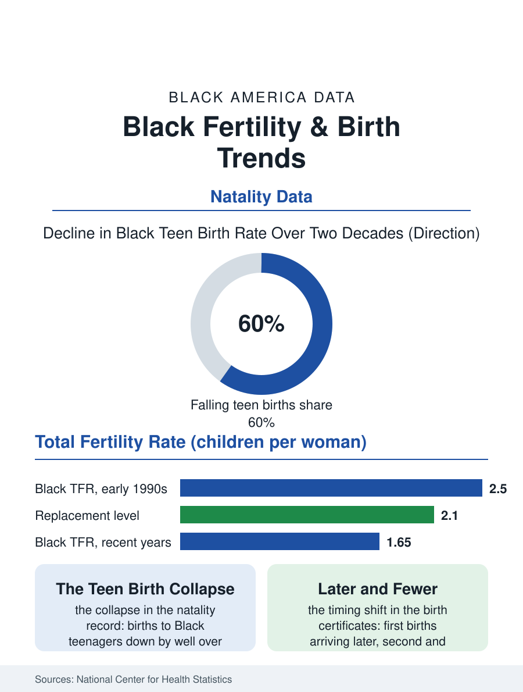

Black Census
Fewer, Later: Black Fertility and Birth Trends
The Black total fertility rate has fallen below replacement, teen births have collapsed, and first births arrive later. The fertility file.

Behind every projection in this atlas sits a birth rate, and the Black birth rate has been falling for a generation. The total fertility rate for Black women, the average number of children a woman would have at current rates, stands in the recent federal natality data around 1.6 to 1.7, below the replacement level of 2.1 and below its own level of roughly 2.5 at the start of the 1990s. Births to Black mothers have declined in absolute number across most recent years even as the population grew. This article reads the fertility file.
The Long Decline and Its Drivers
The National Center for Health Statistics' natality files, built from the nation's birth certificates, record the decline in fine grain. The teen birth rate, once the headline of this file, has collapsed: births to Black teenagers fell by well over half across the last two decades, one of the largest public health improvements in the entire record, driven by contraception access and changing norms the surveys document. First births are arriving later, with the median age of Black mothers rising into the late twenties, converging toward the national pattern. Births to women in their thirties now outnumber births to teenagers by a wide and growing margin, and the second-child and third-child rates, the margins where family size is actually decided, have fallen fastest in the most recent data, which is why demographers read the trend as structural rather than postponed. The drivers the research assembles are the standard modern set, education rising and delaying, housing costs rationing space, student debt delaying household formation, childcare priced against wages, assembled against the specific arithmetic of Black household economics in the income and wealth files of this atlas.
Geography and the Composition of Births
The map underneath the national line has been redrawing itself. Births to Black mothers are most numerous in the South, following the population's return migration, and the fertility rates themselves vary by state in patterns that track childcare costs, Medicaid family planning coverage, and urbanization more than they track culture in any simple way. The natality files also record the shifting composition of Black motherhood: a rising share of births to immigrant mothers, Caribbean and African, whose fertility patterns begin higher and converge toward the native-born pattern within a generation, as the immigration files in this atlas describe; and a rising share of births to mothers with college degrees, the educational upgrading of the childbearing population that mirrors women's attainment gains in the education files. Birth outcomes sit alongside the counts in the data: preterm birth and low birthweight rates remain elevated for Black mothers in the same natality system that records the count decline, so the fertility file and the maternal health file must be read together, fewer births, each carrying on average higher clinical risk, in a delivery system whose access map is its own documented problem.
What Fewer Births Reorganize
The consequences propagate slowly and then all at once. School systems feel them first as kindergarten cohorts shrink, a planning fact already visible in the enrollment projections of the large city districts where Black births fell earliest. The Social Security and labor files feel them last, as smaller cohorts enter work and larger ones retire, the dependency arithmetic the projections file works through. Between those poles sits the family economy: smaller families concentrate resources per child, and the child investment literature reads part of the Black middle class's educational strategy directly off the fertility decline, fewer children, each carried further. The policy debate that follows the numbers, family allowances, childcare subsidies, housing supply, is conducted nationally, but the file's demographic point is simpler and race-specific only in its timing: Black fertility converged to and below the national pattern roughly in step with Black women's educational attainment, which means the birth rate in this file is best read as an economic indicator wearing a demographic costume. The projections in this atlas assume the trend persists. The maternity wards of the Black Belt and the big cities are already living in the smaller-cohort future the rest of the system has yet to budget for.
One more pattern in the natality data deserves its sentence, because it reverses a long assumption: the fertility gap between Black and white women has narrowed to the smallest margin in the recorded series, not because white fertility rose but because both fell toward the same economic weather. The convergence means the birth rate's story is now a shared national story told at slightly different speeds, and the demographers who once treated Black fertility as a special topic increasingly treat it as the leading edge of the general one.
More in Black Census
The Black Population of the United States: Size, Definitions, and Distribution
The Black population of the United States totals 52.8 million — 15.4 percent of the nation. How the Census Bureau defines and counts the population, and where it lives.
Black Median Household Income in the United States
Black median household income stands at $56,490 in the Census Bureau's annual income report — how the figure is measured, how it compares, and what drives it.
The Black Poverty Rate: Levels, Children, and the Long Trend
The official Black poverty rate is 17.1 percent — against 11.1 percent nationally and 7.7 percent for non-Hispanic White Americans. How poverty is measured and what the data show.
Source: National Center for Health Statistics, National Vital Statistics System natality files; CDC fertility reports.